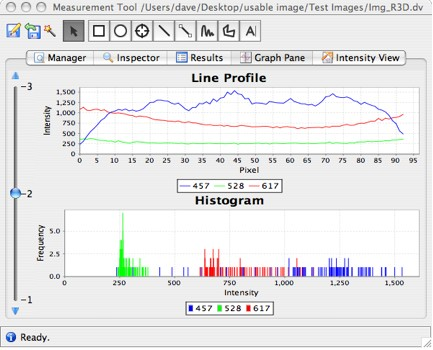

Selecting the Graph Pane tab shows intensity values as a histogram. Additionally, a line profile will be shown for line ROI shapes (see Figure 3.10.6.3.1-1).
|  |
| Figure 3.10.6.3.1-1: Graph pane view of pixel intensities |
If the ROI shape is moved or resized, or another ROI shape is chosen, the histogram and line profile (if shown) will be automatically updated to reflect these changes.